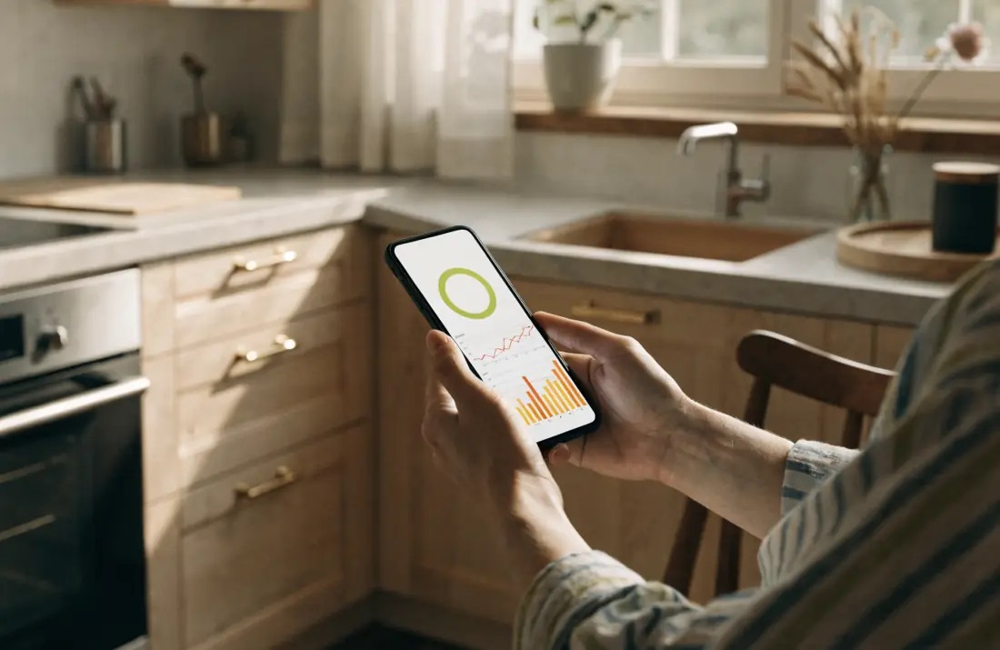
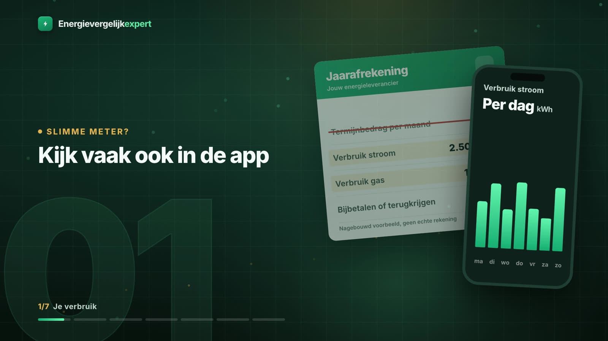

Bron: Milieu Centraal, gemiddeld energieverbruik, pagina laatst gewijzigd op 4 september 2026.
Waar het gemiddelde vandaan komt
Milieu Centraal baseert zijn cijfers op het CBS. Er zitten een paar keuzes in die je moet kennen voordat je jezelf ermee vergelijkt. Voor het gasverbruik zijn alleen woningen met een gasaansluiting meegeteld, en het gas is gecorrigeerd voor koude en zachte winters. Bij stroom gaat het om wat woningen van het net afnemen. Stroom die je met zonnepanelen opwekt en zelf direct gebruikt, zit daar niet in. Het gemiddelde is de afgelopen jaren ook gedaald: volgens Milieu Centraal is het gasverbruik tussen 2010 en 2024 met 36 procent afgenomen, vooral doordat cv-ketels zuiniger werden en huizen beter zijn geïsoleerd.
Woon je in een huis met een warmtenet, ook wel stadsverwarming, dan staat er geen gas maar warmte op je rekening, in gigajoule. Het gemiddelde ligt dan rond de 20 GJ per jaar voor verwarming en warm water.
Waarom jouw verbruik anders is
Volgens Milieu Centraal hangt je verbruik vooral af van het soort huis en het aantal mensen dat er woont. Iemand alleen in een klein, nieuw appartement verbruikt veel minder dan een groot gezin in een oud, vrijstaand huis.
- Gas: gemiddeld gaat 75 procent naar verwarming en 25 procent naar warm water en koken. Appartementen verbruiken vaak minder, omdat ze klein zijn en ingesloten liggen tussen buren. Huizen van 1992 of later zijn vaak goed geïsoleerd en verbruiken daardoor meestal minder.
- Stroom: hangt vooral af van het aantal apparaten, hoe zuinig ze zijn en hoe vaak je ze gebruikt. In grote gezinnen ligt het stroomverbruik vaak hoger.
- Nieuwe apparaten: een warmtepomp of elektrische auto verhoogt je stroomverbruik flink. Zonnepanelen verlagen juist wat je van het net afneemt.
Schatten als je je verbruik niet weet
Ga je verhuizen of woon je nog geen jaar op je adres, dan moet je schatten. Energievergelijkexpert gebruikt in zijn uitleg deze rekenwaarden per huishoudgrootte. Het zijn ruwe schattingen, geen metingen.
| Huishouden | Stroom per jaar | Gas per jaar |
|---|---|---|
| 1 persoon | 1.600 kWh | 800 m³ |
| 2 personen | 2.500 kWh | 1.100 m³ |
| 3 personen | 3.200 kWh | 1.300 m³ |
| 4 personen | 3.900 kWh | 1.500 m³ |
| 5 personen | 4.600 kWh | 1.700 m³ |
Rekenwaarden van Energievergelijkexpert, pagina gemiddeld energieverbruik, bijgewerkt 22 oktober 2026.
Voor het gas corrigeert Energievergelijkexpert daarnaast voor het woningtype: een appartement rekent met 0,85 keer het gasverbruik, een hoekwoning met 1,15 keer en een vrijstaand huis met 1,4 keer. Een tussenwoning is de basis. Isolatie kan dat beeld omdraaien: een goed geïsoleerd vrijstaand huis kan zuiniger zijn dan een slecht geïsoleerde tussenwoning. De voorbeelden op energievergelijkexpert.nl rekenen met 2.500 kWh en 1.100 m³; dat is een voorbeeldverbruik, niet jouw verbruik.

Je echte verbruik vinden
Voor een vergelijking is je eigen verbruik altijd beter dan een gemiddelde. Er zijn drie plekken waar je het vindt:
- Je jaarafrekening. Volgens de ACM staat op de eerste pagina hoeveel energie je hebt verbruikt, en als je zonnepanelen hebt ook hoeveel je hebt teruggeleverd.
- De app of website van je leverancier. Met een slimme meter kun je je verbruik vaak per dag of per uur volgen. Tel de laatste twaalf maanden op.
- Je meterstanden. Met een slimme meter leest de netbeheerder de standen automatisch uit. Heb je een meter die dat niet doet, noteer dan zelf de standen met een jaar ertussen; een foto met datum helpt als bewijs.
Hoe je dat getal gebruikt en wat er verder op je jaarafrekening staat, zie je in deze uitlegvideo over je jaarafrekening.
Het getal dat je netbeheerder gebruikt
Naast je eigen meting bestaat er nog een getal: je standaardjaarverbruik. Dat berekent de netbeheerder, op basis van je verbruik in het verleden en gecorrigeerd voor het weer. Volgens de ACM schat je leverancier je verbruik daarmee als je geen meterstanden doorgeeft, en het bepaalt bij gas ook welk capaciteitstarief je betaalt. Verbruik je na isoleren veel minder, dan kun je de netbeheerder vragen om een nieuwe berekening. Je leverancier geeft daarvoor je laatste meterstanden door.

Drie vergissingen met het gemiddelde
- Een ander gemiddelde gebruiken. Rekenvoorbeelden gebruiken verschillende getallen: Milieu Centraal komt op 2.430 kWh en 1.040 m³, de voorbeelden van Energievergelijkexpert rekenen met 2.500 kWh en 1.100 m³. Kijk dus altijd bij welk verbruik een prijs is berekend.
- Je zonnepanelen vergeten. Het gemiddelde van Milieu Centraal gaat over afname van het net. Met panelen neem je minder af, maar voor een vergelijking telt ook wat je teruglevert.
- Een oud jaar gebruiken na een grote verandering. Na isoleren, of met een nieuwe warmtepomp of elektrische auto, klopt je vorige jaarafrekening niet meer. Gebruik dan de app van je leverancier of een schatting.
Van verbruik naar vergelijking
Je verbruik bepaalt welk contract voor jou het voordeligst is. Bij een hoog verbruik weegt de prijs per kWh en m³ het zwaarst, bij een laag verbruik juist de vaste kosten en de korting. Twee huishoudens met hetzelfde contract kunnen daardoor heel verschillende bedragen betalen. Meer achtergrond staat in het artikel over gemiddeld energieverbruik. Weet je het nog niet precies, dan helpt de keuzehulp je op weg. Met je eigen getal kun je daarna contracten vergelijken op jaarprijs.
Bronnen
- Milieu Centraal, Gemiddeld energieverbruik (2.430 kWh, 1.040 m³, 20 GJ warmtenet, 75/25 procent gas, na 1992, daling 36 procent 2010 tot 2024, CBS-basis), laatst gewijzigd 04-09-2026, geraadpleegd 23-10-2026
- ACM ConsuWijzer, De energierekening (eerste pagina jaarafrekening)
- ACM ConsuWijzer, Meterstanden op de energierekening (slimme meter, foto, schatting op standaardjaarafname)
- ACM ConsuWijzer, Netbeheerkosten (standaardjaarverbruik gas)
- Energievergelijkexpert, energievergelijkexpert.nl/energie-uitgelegd/gemiddeld-energieverbruik/ (rekenwaarden per huishoudgrootte en woningtype, app, bijgewerkt 22-10-2026) en /goedkoopste-energieleverancier/ (voorbeeldverbruik 2.500 kWh en 1.100 m³, hoog en laag verbruik)